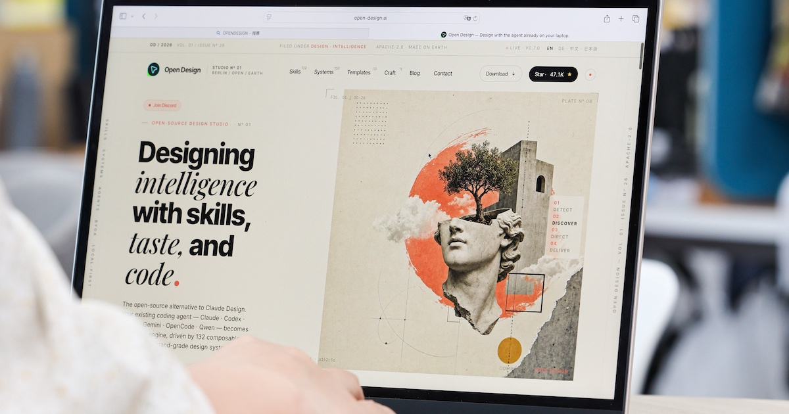

網站、簡報、Dashboard 靠 AI 一鍵生成，連 SVG 動畫都能做

Open Design 是一款免費開源的 AI 設計平台，透過串接 Gemini CLI、Claude、Codex 等大型語言模型，讓使用者能以自然語言快速生成專業簡報、高質感網站雛形、互動式 Dashboard，甚至 SVG 動畫效果，大幅降低數位設計的技術門檻。
Open Design 並非單一 AI 模型，而是一套開源的 AI 設計工作流系統，能將 Claude、Gemini、Codex 等不同大型語言模型整合進同一設計環境，讓 AI 參與整個設計與前端開發流程。其運作原理接近「Agentic Workflow（代理式工作流）」概念，AI 能拆解任務、串接工具、一步步完成整體工作。
支援「線框圖」與「高擬真」兩種模式，輸入提示詞即可生成完整網站架構，包含 HTML 檔案。系統會主動詢問設計風格、版型偏好與互動需求，使用者還能在編輯器中手動修改文字、版面與商品資訊。
能指定版面配置、加入即時數據卡片、KPI 統計區塊、側邊選單等元素，生成對應的互動式儀表板。完成後可直接預覽，並能以對話或編輯器調整配色、資訊排列與圖表內容。
內建 Motion Frame 功能，只要以自然語言描述動畫需求（如「飛機從台北飛往東京的 SVG 動畫」），即可生成具動態效果的 SVG 程式碼動畫，所有元素本質上皆由程式碼繪製，後續修改方便。
Open Design 最大特色在於「開源架構」與「多模型整合」，可自由串接本機 CLI 與外部 MCP 工具，相較封閉式付費平台自由度更高，但初期設定需要理解 AI 工作流概念。
「Open Design 內建大量可重複使用的 Skills 與 Design Systems，可快速套用極簡科技風、Apple 風格、SaaS 產品頁、現代 Dashboard 等不同設計語言，並透過自然語言快速修改細節。」
— T客邦 報導Open Design 的出現代表 AI 設計工具正進入「代理式工作流」時代。相較於封閉式付費平台，開源架構讓進階使用者與開發者能自由擴充、自建設計系統，預期將吸引更多非設計背景的使用者投入 AI 輔助設計的行列。隨著 Skills 與 Design Systems 生態系持續壯大，AI 設計的門檻將進一步降低。
| 項目 | Claude Design | Open Design |
|---|---|---|
| 平台類型 | 封閉式官方平台 | 開源架構 |
| 模型整合 | 主要綁定 Claude 生態系 | Gemini、Claude、Codex 自由混搭 |
| 自訂彈性 | 官方掌控，能自訂範圍有限 | 可自建設計系統與 MCP 工具 |
| 費用 | 收費平台 | 完全免費開源 |
| 穩定性 | 整合完整、穩定性高 | 需自行設定環境 |
| 適合對象 | 一般設計者 | 進階使用者與開發者 |